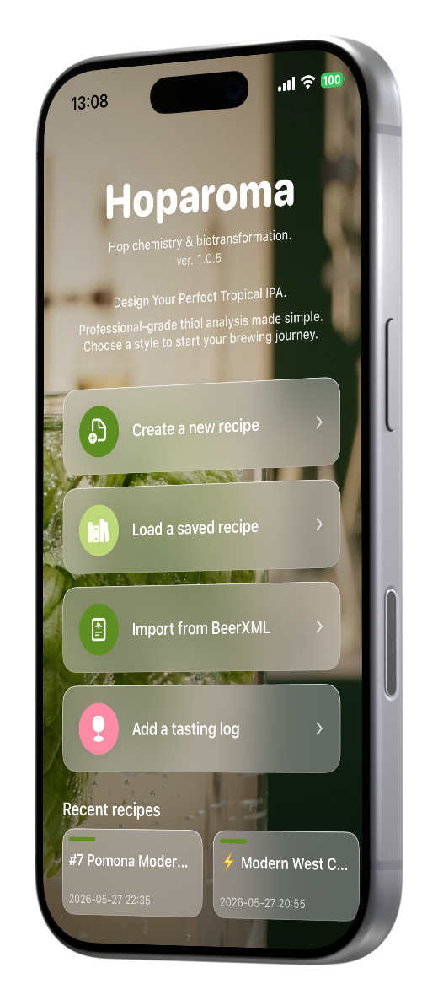
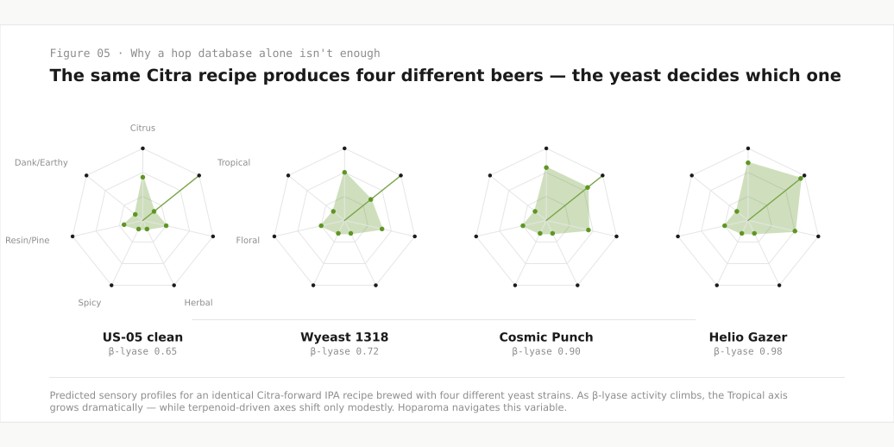
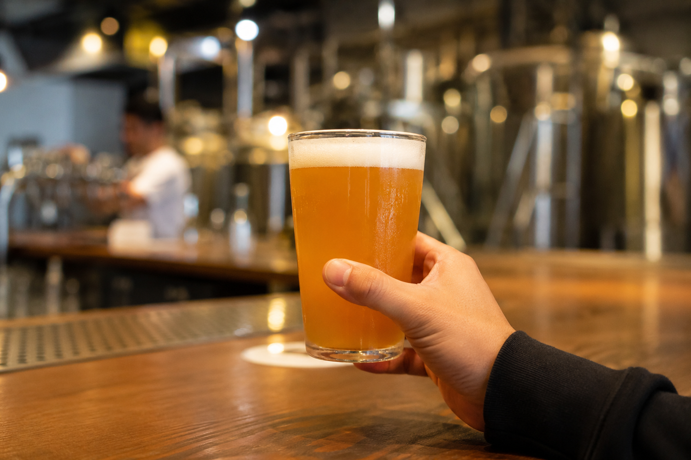
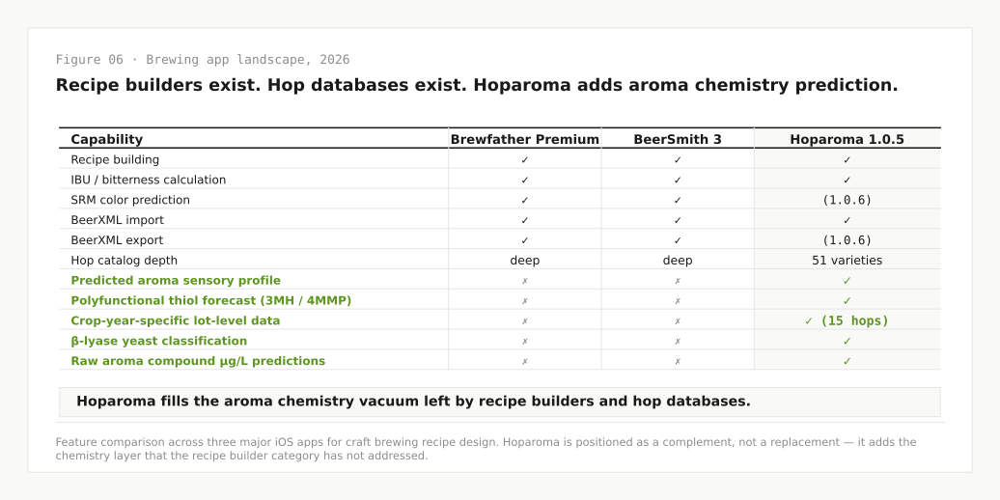
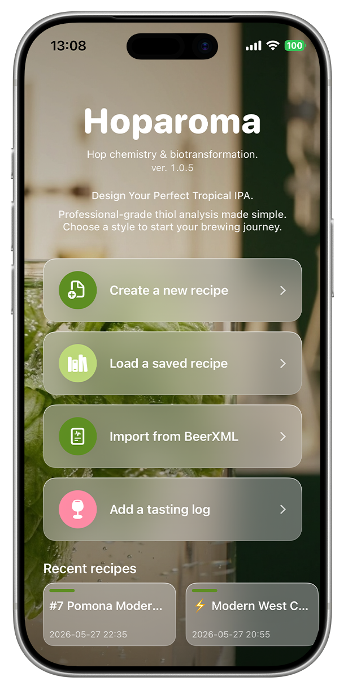
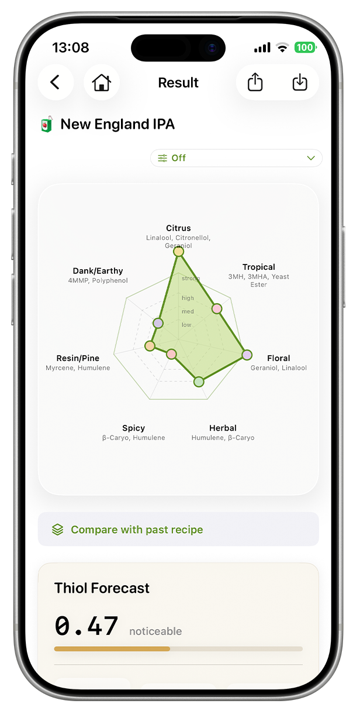
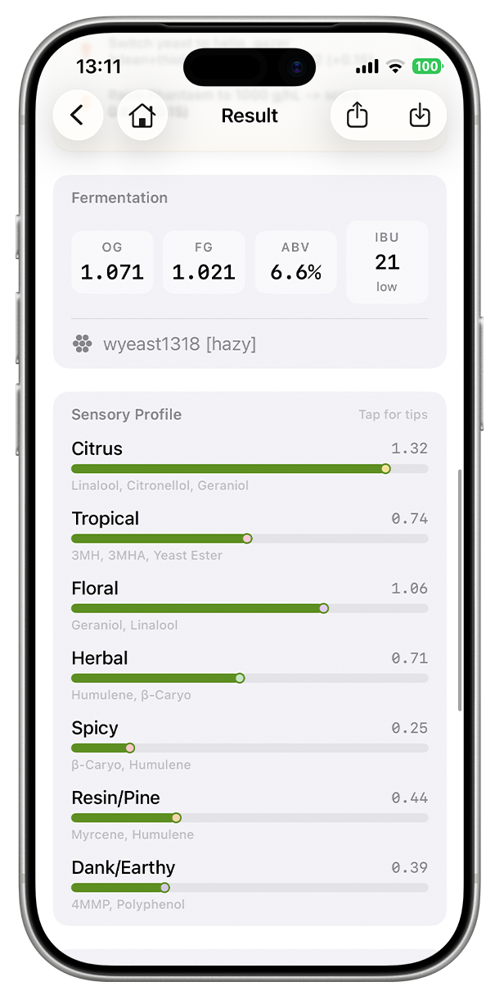
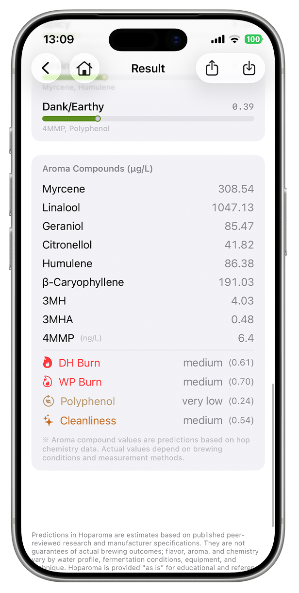

The first iOS app to predict hop aroma expression across yeast, hop, malt, and Phantasm thiol-feeder — using peer-reviewed chemistry instead of a flavor wheel guess.
Design the aroma before you brew.
Aroma first. Alcohol last.
Evaluation materials for editorial review. Marketing site: hoparoma.github.io

Most brewing apps — Brewfather, BeerSmith, Brewer's Friend — are great at tracking what you brew. Hoparoma predicts what your beer will smell like before you brew it, using peer-reviewed thiol biotransformation chemistry across four variables: yeast, hop, malt, and Phantasm thiol-feeder.
Built natively for Apple platforms with SwiftUI, Swift Charts, and App Intents. A solo project from a Tokyo studio.
Hop alpha acid percentages aren't enough. The variable that decides what your IPA actually smells like is yeast biotransformation — and that's the prediction surface Hoparoma navigates.


Tsukaya Suzuki is a Tokyo-based filmmaker and indie iOS developer. He works as a filmmaker through Pith Films Tokyo — long-form documentary work for MARUNI 2020, BREATH TAKING KAGOSHIMA, and Re:SET KOM_I.
In Japan, home brewing above 1% ABV is restricted by law. So Tsukaya has spent years designing low-ABV recipes within that constraint, studying hop biotransformation and obsessing over the question that mattered most: what does it take to design hop aroma intentionally when ABV is your hardest constraint?
The same observational discipline that shapes documentary editing — restraint, slow attention, an editor's instinct for what to leave out — is what shaped Hoparoma's design language.
Hoparoma is positioned as a complement, not a replacement — it adds the chemistry layer that the recipe builder category has not addressed.

Where most brewing apps stack every variable on screen, Hoparoma hides 80% of the complexity behind a single radial Bento card visualization that maps four thiol axes onto one chart. Filmmaker's restraint, applied to indie software.

Home Create · Load · Import · Tasting log
Sensory radar 7 aroma axes · 1 visualization
Axis breakdown Citrus · Tropical · Floral · Herbal · Spicy
Compound depth µg/L predictions · Burn factorsHere's what's actually happening at the molecular level. The chart spans four orders of magnitude — from 0.1 µg/L to 10,000 µg/L — and the surprising thing is that the three polyfunctional thiols (3MH, 3MHA, 4MMP) sit at single-digit concentrations yet drive the entire Tropical sensory axis. Tiny molecules. Huge expression.
Fig. 03 — Source: Mindful Hazy Session IPA preset prediction · Logarithmic scale across four orders of magnitude
Not all hop data is created equal. Fifteen varieties in Hoparoma's catalog carry lot-level analytical data tied to specific crop years — the kind a brewer needs for actual prediction work. The remaining thirty-six rely on multi-year aggregate ranges from supplier technical sheets, and we say so right in the app. Honesty about depth is a feature.
Fig. 04 — Source: Hoparoma 1.0.5 hop catalog · Lot CoAs from Yakima Chief, Hopsteiner, BarthHaas, John I. Haas, HPA
I'm a filmmaker — and through years of client work, I've been lucky enough to travel and drink beer all over the world. Japanese lager at home (which I still love), but the beer that kept me coming back was American IPA. Classic cans I'd grab from corner stores in New York — Sierra Nevada, Stone — and then later, the newer wave of American IPA at a small brewery in Alaska that completely rewired what I thought a beer could smell like.
When I started brewing my own beer in the evenings from my Tokyo studio, I wanted to chase that aroma. But in Japan, home brewing above 1% ABV is restricted by law. That constraint turned into the most interesting design problem I'd ever encountered: how do you build a beer that's both low in alcohol and high in aroma?
For a while, I was just asking AI. Brewing a recipe, opening ChatGPT, asking what hop pairs with what yeast at what fermentation temperature. It worked, but only kind of — the more I learned, the more I needed the same calculation done the same way every batch. Reproducibility, not improvisation. So I built the tool I wanted: a deterministic, visible, repeatable design surface for hop aroma.
These days, you can drink incredible American IPA in Japan too. I'm a huge fan of Ambitious Ales, Green Cheek Beer Co., and Cerebral Brewing — breweries that taught me how far hop-forward design can go. My hope is that Hoparoma becomes a partner for that journey.
There was a moment in particular — I was drinking at an American craft beer specialty bar in Japan, and I had this beer with an aroma I'd never encountered before. Not just citrus. Stone fruit, mango, this tropical layered complexity that didn't make sense. I asked: was there fruit juice added? No. It was all hop-derived. I couldn't believe it.
I tried to recreate that aroma at home, batch after batch, and I couldn't get there. Same hops, same ratios — but my beer wasn't doing what theirs was doing. That gap is what sent me into the chemistry. I started reading peer-reviewed research — Sasaki 2008 on thiol biosynthesis in beer, Sharp 2021 on quantifying 3MH across hop varieties, Brauwelt 2025 on LC-MS/MS chromatography for hop oil analysis. I learned that yeast wasn't just fermenting sugar — certain strains were actively releasing hidden thiols from hop precursors. Then how malt protein affects haze and thiol retention. Then how a small bit of Phantasm powder can feed even more thiol release.
Each paper opened another variable. And as the chemistry got deeper, I realized I couldn't hold all of it in my head while designing a recipe — I didn't have the experience yet to integrate it intuitively the way a veteran brewer might. I needed a tool that did the integration for me. That's when I started building Hoparoma.
Everything. I wanted Hoparoma to put the beer's aroma at the center — not the recipe, not the ingredients, the aroma itself. And the best way I found to visually express the aroma-centric character of a beer was a single radial chart: four thiol axes — yeast, hop, malt, Phantasm — read together on one Bento card. Not four screens. Not four panels. One expression.
Where most brewing apps stack every variable on screen — alpha acid percentages, hop schedule timing, water chemistry, fermentation curves — Hoparoma hides 80% of that complexity behind that one chart. I spent a lot of time figuring out what to leave out rather than bring in. The same observational discipline that shapes documentary editing — restraint, slow attention, an editor's instinct for what to leave out — is what shaped this app. Filmmaker's restraint, applied to indie software.
Most brewing apps — Brewfather, BeerSmith, Brewer's Friend — are great at tracking what you brew. They handle recipes, ingredient inventory, and batch logs really well. But none of them predict what your beer will smell like before you brew it. Hoparoma does that. It's the first iOS app to predict hop aroma expression across four variables — yeast, hop, malt, and Phantasm thiol-feeder — using peer-reviewed thiol biotransformation chemistry instead of a flavor wheel guess. The chemistry foundation is what makes it different. Where existing apps track recipes, Hoparoma designs aroma.
Follow your curiosity. For me, that's been one of the most powerful things — I built Hoparoma because I genuinely needed it as a Tokyo brewer working within Japan's 1% ABV constraint, and the curiosity to solve my own problem gave me the energy to learn Swift, study thiol chemistry, and ship the app.
Also: lean on Apple platforms native. Hoparoma uses SwiftUI throughout, Swift Charts for data visualization, App Intents for Spotlight integration, and (in 1.1) a watchOS companion. Being a good platform citizen makes users feel comfortable with your app even when they're new to it.
For reviewers who need to verify chemistry sources, download brand assets, or contact the developer.
Eight peer-reviewed papers (Sasaki 2008 · Sharp 2021 · Brauwelt 2025 · Roland 2016/2018 · Chenot 2019/2021/2023 · Hellwig 2022 · Molitor 2022) plus six lot-level data sources (Hop Alliance · Yakima Chief · Hopsteiner · BarthHaas · John I. Haas · HPA).
View full bibliography →App icon (1024 / 512), hero mockup, four bento screenshots in iPhone 17 Pro Max frame, App Store badge variants. Vellum brand palette + typography reference included.
Download press assets (zip) →For interview, additional materials, or press inquiries. Reply within 24 hours from Tokyo (JST).
hoparoma@tsukayasuzuki.com tsukayasuzuki.com (filmmaker portfolio) →